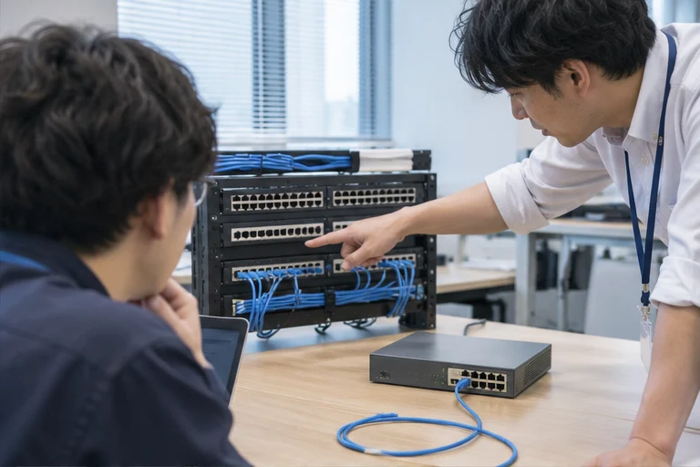
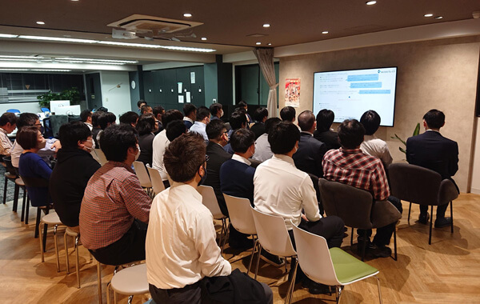
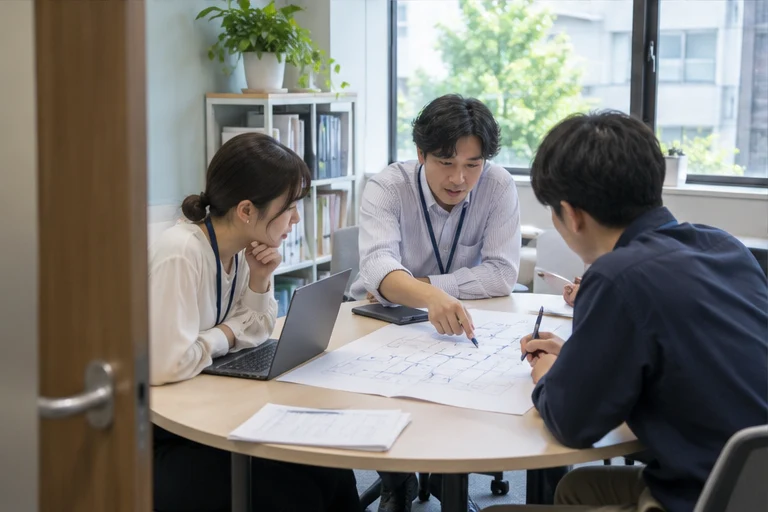
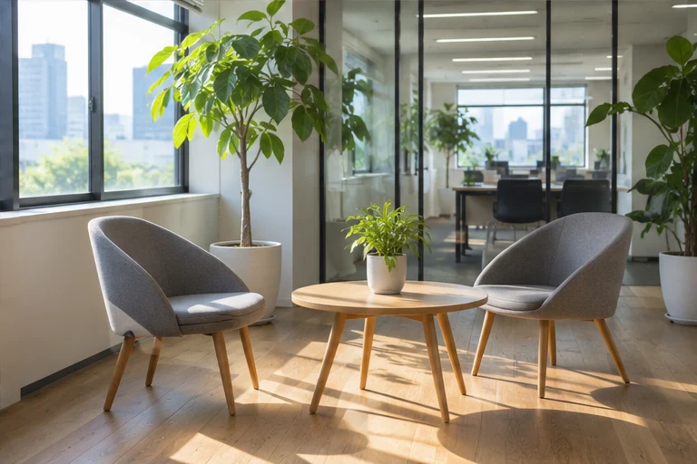

株式会社クレイス ／ 写真と構図の比較
次に見たい職場の場面
大きな4枚は、被写体を選ぶために生成した架空の職場です。各案の横にある実際の写真を押すと原寸で開けます。気に入った被写体と、取り入れたい光や視点を別々に選べます。
事業紹介
サーバー室の通路


同じ高さの扉が奥へ連なる構図。通路を少し進むだけで設備の規模が伝わります。自社設備と誤解されないよう、本採用時はイメージであることを添えます。
育成・事業紹介
先輩と機器を確かめる研修卓



指先、ポート、青いケーブルが一枚に収まります。写真に少し寄るだけでも、誰が誰に何を教えているかを伝えられる案です。
会社紹介・採用
円卓で図面を囲む設計相談



トップの円卓を、扉越しに見た実写風の場面へつなぎます。人物の位置を変えるより、手元の図面をもう一枚見せる構成が向いています。
採用・働く環境
窓辺の小さな面談席



手前の葉、椅子、奥のガラス間仕切りで距離が分かります。空気感が主役になるので、応募前に職場を想像してもらう場面に合います。